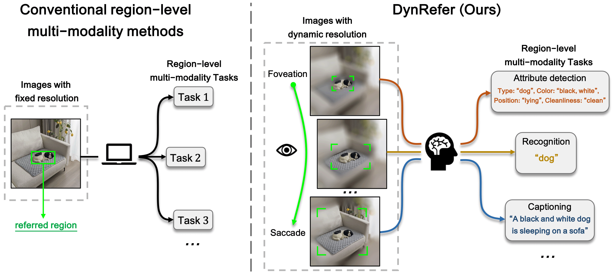
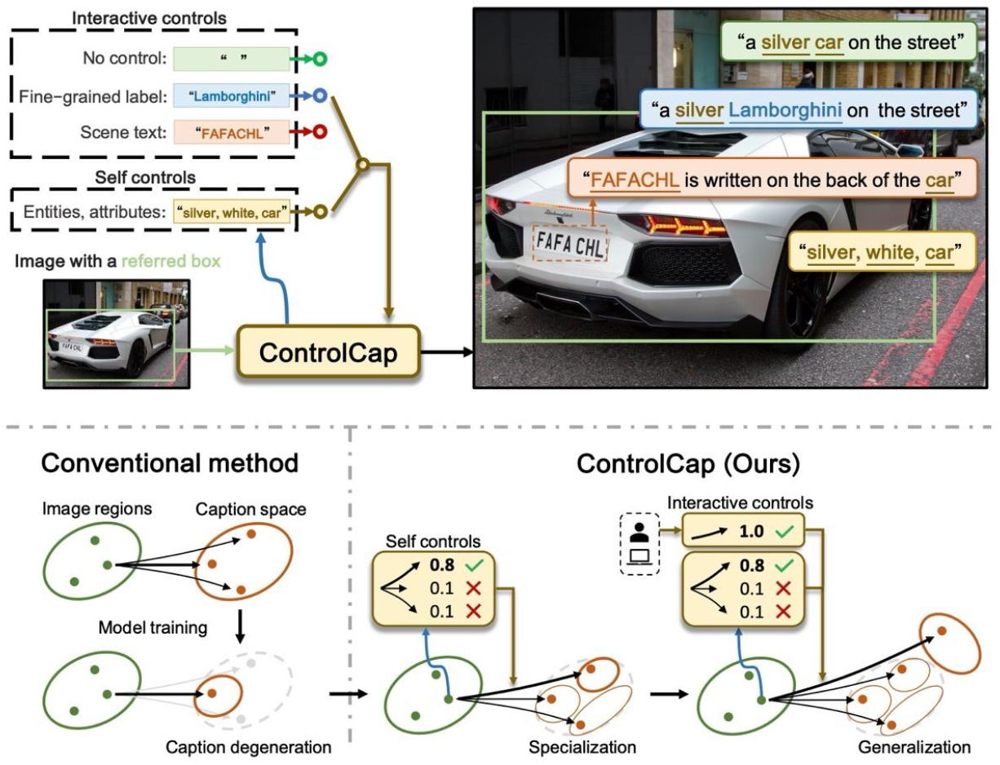
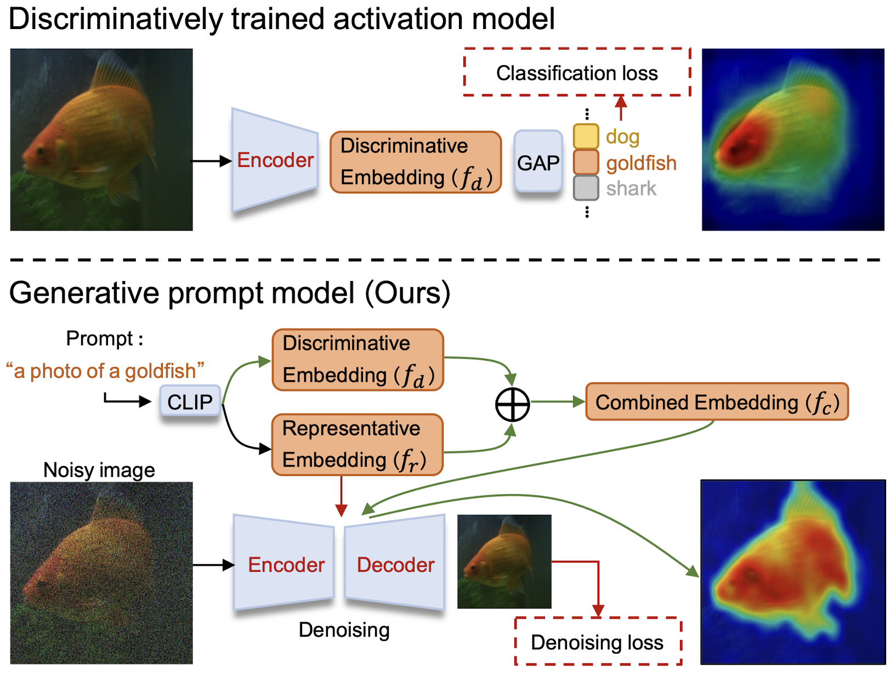
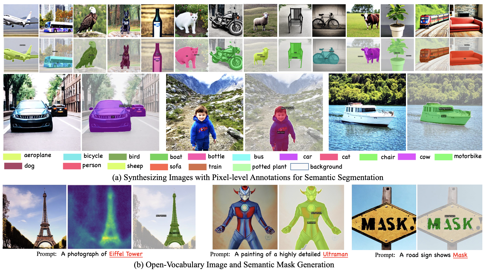
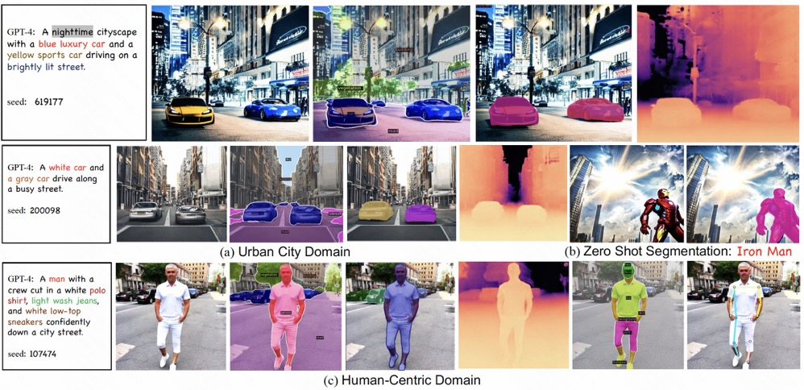

Yuzhong ZhaoPh.D. candidateRoom 260, Academy 2 Building
|
|
Biography
I am a Ph.D. candidate of LAMP (Learning And Machine Perception) in the School of Computer Science and Technology, University of Chinese Academy of Sciences , advised by Prof. Fang Wan . I got a B.E. degree in Peking University, Beijing in June 2020.
My research interests include computer vision and deep learning, specifically for text detection and recognition, weakly supervised sensing, and multimodal large language models.
Publications & Preprints
(* Equal Contribution)|  | Yuzhong Zhao*, Feng Liu*, Yue Liu, Mingxiang Liao, Chen Gong, Qixiang Ye, Fang Wan
DynRefer: Delving into Region-level Multi-modality Tasks via Dynamic Resolution arXiv [Paper] [Code] |
|  | Yuzhong Zhao, Yue Liu, Zonghao Guo, Weijia Wu, Chen Gong, Qixiang Ye, Fang Wan
ControlCap: Controllable Region-level Captioning Proceedings of the European Conference on Computer Vision, 2024 [Paper] [Code] |
|  | Yuzhong Zhao, Qixiang Ye, Weijia Wu, Chunhua Shen, Fang Wan
Generative Prompt Model for Weakly Supervised Object Localization Proceedings of the IEEE/CVF International Conference on Computer Vision, 2023 [Paper] [Code] |
|  | Weijia Wu, Yuzhong Zhao, Mike Zheng Shou, Hong Zhou, Chunhua Shen
DiffuMask: Synthesizing Images with Pixel-level Annotations for Semantic Segmentation Using Diffusion Models Proceedings of the IEEE/CVF International Conference on Computer Vision, 2023 [Paper] [Code] |
|  | Weijia Wu, Yuzhong Zhao, Hao Chen, Yuchao Gu, Rui Zhao, Yefei He, Hong Zhou, Mike Zheng Shou, Chunhua Shen
DatasetDM: Synthesizing Data with Perception Annotations Using Diffusion Models Thirty-seventh Conference on Neural Information Processing Systems, 2023 [Paper] [Code] |